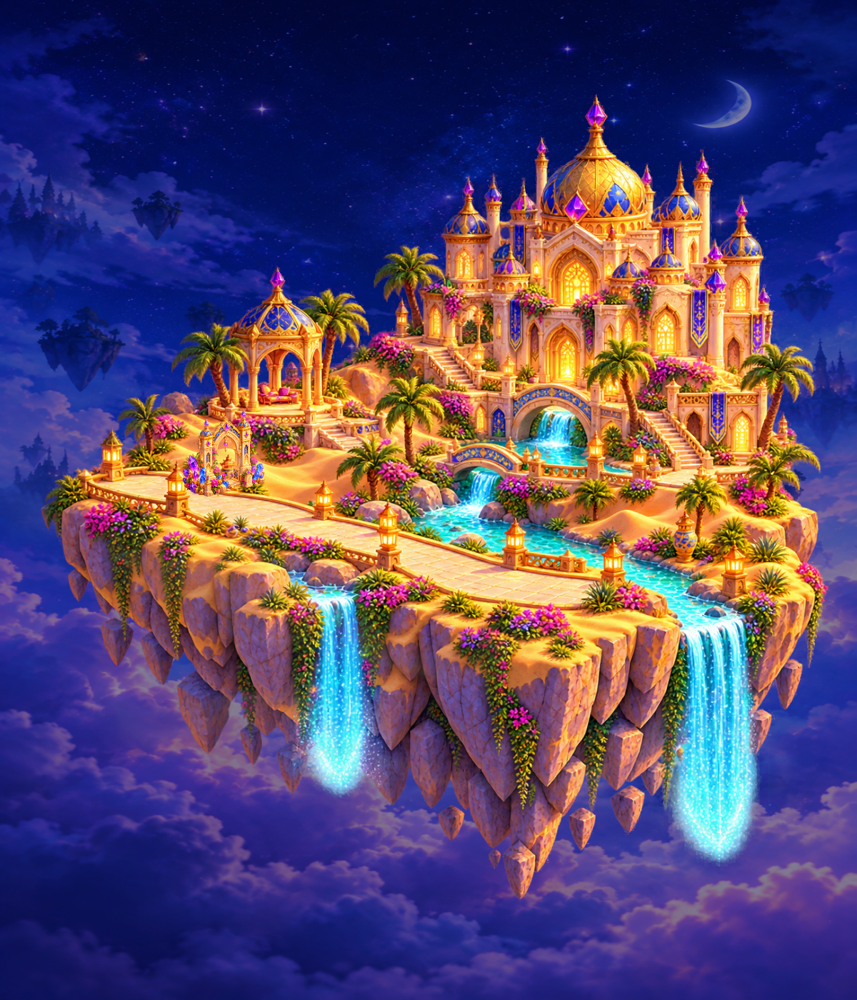
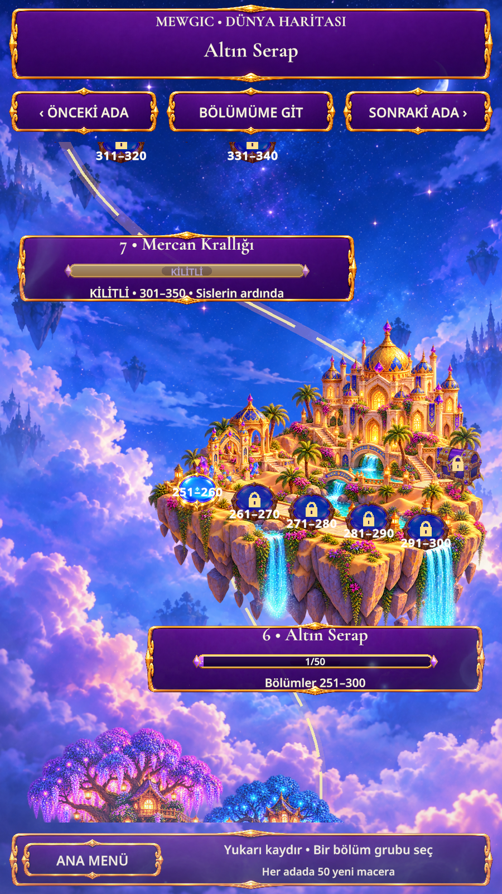

Altın saray ve kum terasları, turkuaz vaha/şelale, palmiye ve egzotik çiçekler; bağımsız mor-mavi kristal kemer. Mevcut fantastik evrene ait yumuşak3D malzeme/ışık dili korunurken orman adasından farklı bir çöl silueti üretildi.


Saray kubbeleri ve ayrıntılı kumtaşı, alt kütle/palmiye silueti ve su rengi referansın ayrıntı düzeyiyle uyumlu. Dekor ayrı PNG/transform'dur. Kaynak atlasındaki turkuaz su pikselleri tabandan çıkarılıp ayrı su bileşeninde çizilir; aydınlık köpükteki bazı nötr pikseller statik resimde kalır. Bu yöntem gerçek akış simülasyonu veya her bitkinin ayrı3D modeli değildir.
Mevcut haritanın beş grup/10 bölüm seçicisi, büyük mor-altın panelleri ve ada aralıkları değişmedi; referansın tekil düğüm diziliminin piksel kopyası hedeflenmedi. Telefon FPS/GPU/RAM/termal kabulü yapılmadı. Yeni TestFlight build'i yok.
9:19.5 · 9:20 / Safe Area · 291–300 seçicisi · HareketA · HareketB · Üretim promptları